Help Pulse
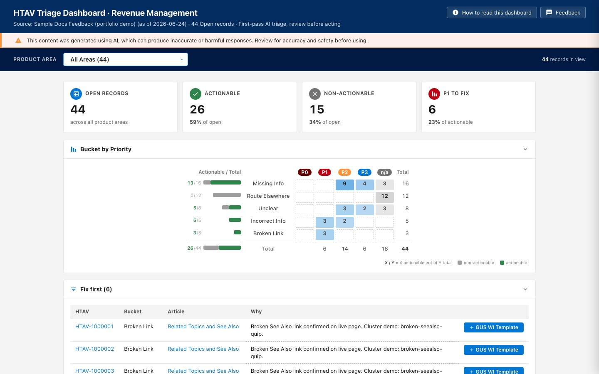
“Not helpful” votes become a shared backlog: act / don’t / need-info, then fix type and P0–P3.
Role: Built the triage rules and dashboard

“Not helpful” votes become a shared backlog: act / don’t / need-info, then fix type and P0–P3.
Role: Built the triage rules and dashboard
Four-phase IA for Salesforce Revenue Cloud catalogs. Agentforce for intent, embedded AI for repetition.
Role: Information architecture, user flows, and the AI interaction model
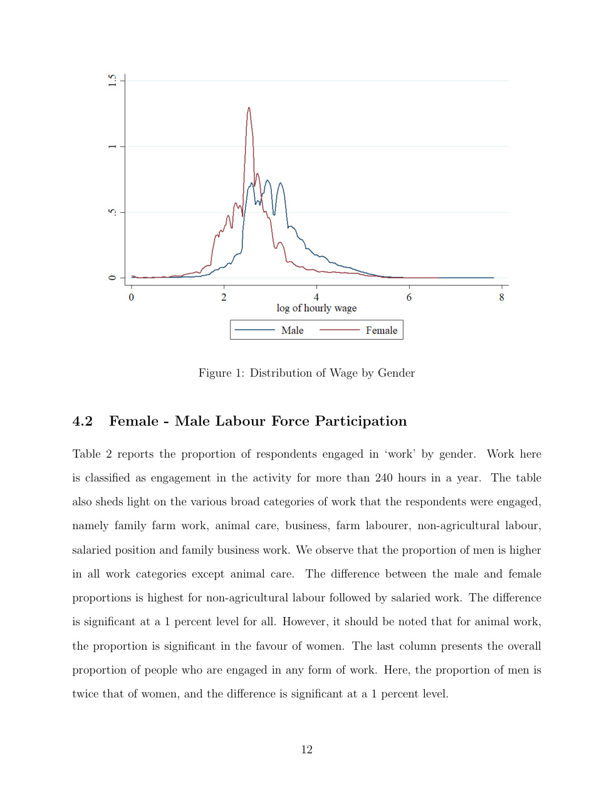
With Arz Taneja. IHDS 2005 and 2011. In 2011 the log wage gap is 0.50; most of it is coefficients.
Role: Co-author

Harvard Policy Hackathon 2025. J&K credit exclusion is structural; a holding company as the missing layer.
Role: Harvard Policy Hackathon brief, four-person team
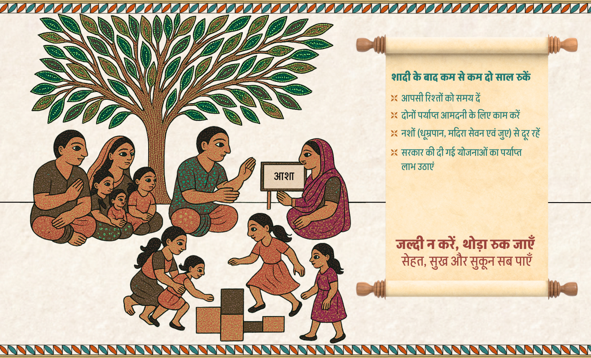
Hindi print pamphlets for rural men in Madhya Pradesh. Zero parity and single parity. IPAS VIKALP brief, Team ARSon.
Role: Leaflet design and behavioural research
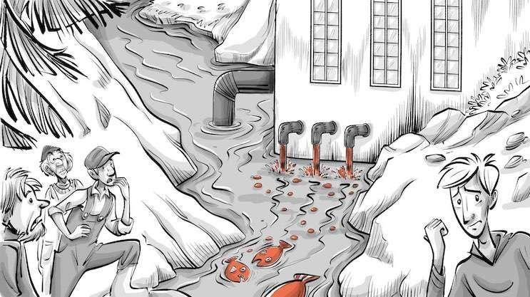
Solo theory essay. Pigou to carbon markets: who internalises, and why the tool changes with the externality.
Role: Author

With Maria Joseph. Remittances and knowledge flows, modelled as development channels — not only money home.
Role: Co-author
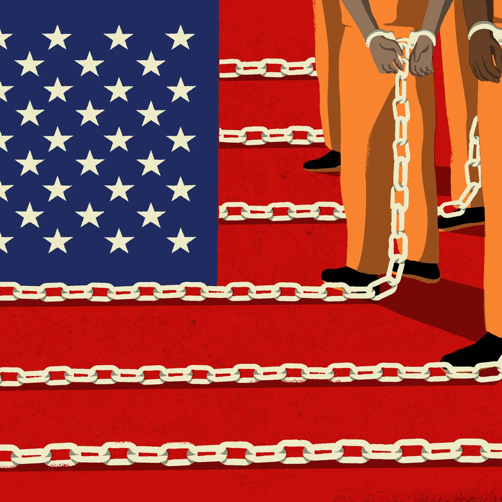
With Arz Taneja and Sakshi Singh. NLSY 1979–2020. Incarceration as an institution that concentrates inequality.
Role: Co-author
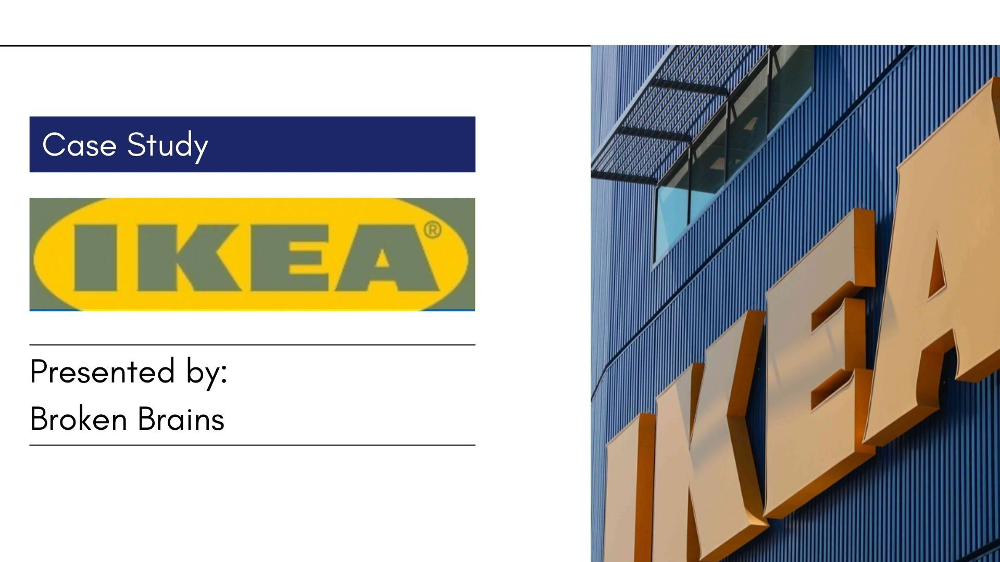
LSR. IKEA into an 80% unorganised furniture market — Delhi, Bengaluru, Hyderabad.
Role: Strategy case, Broken Brains
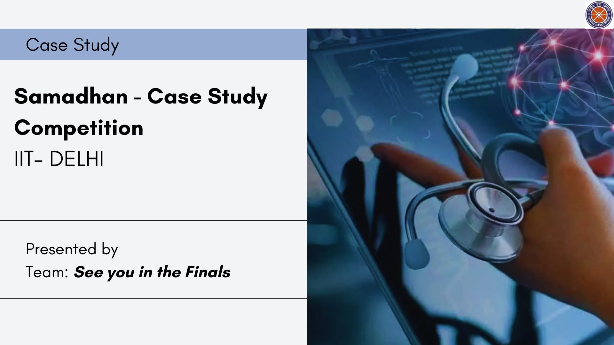
IIT Delhi Samadhan. Last-mile delivery when public spend is thin and most cost is out-of-pocket.
Role: Competition case
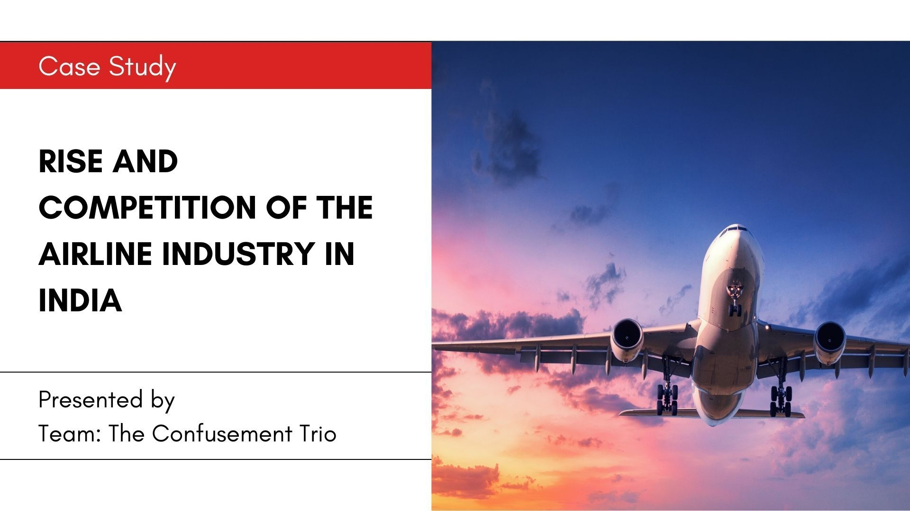
SVNIT. Entry into Indian aviation: traffic is up, regional routes and price still bind.
Role: Competition case
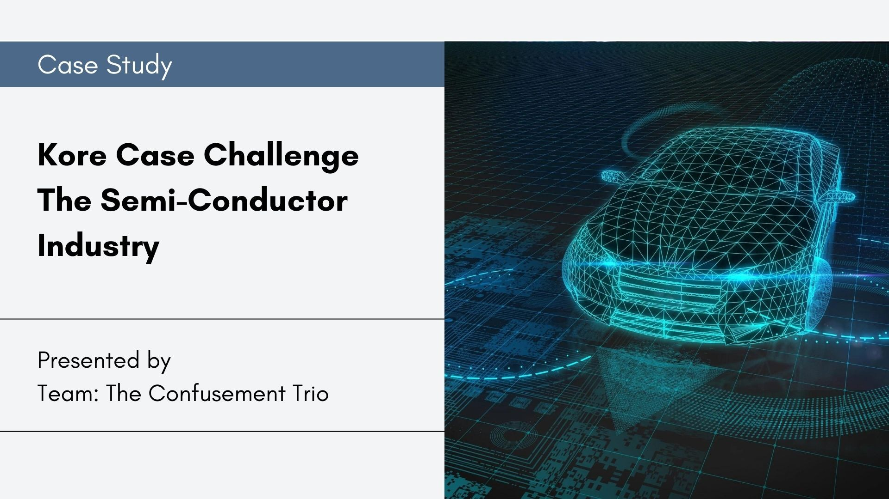
Competition case. Shortage as a coordination problem — demand on one side, supply risk on the other.
Role: Competition case
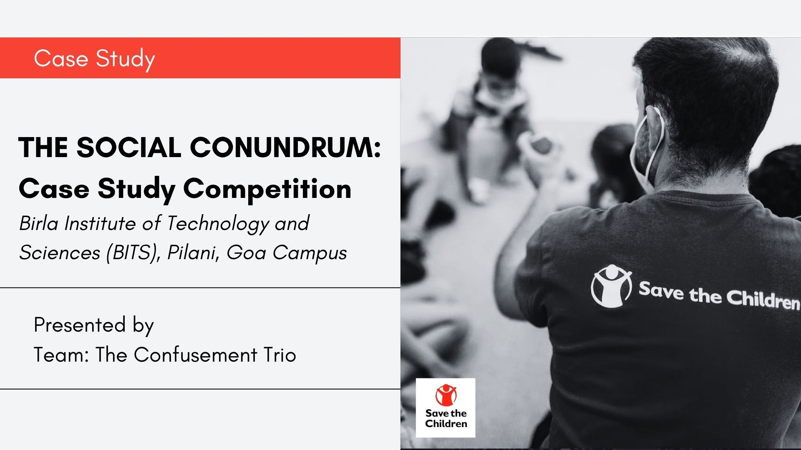
Social-sector case. Who holds the child across departments when the district has to deliver.
Role: Competition case
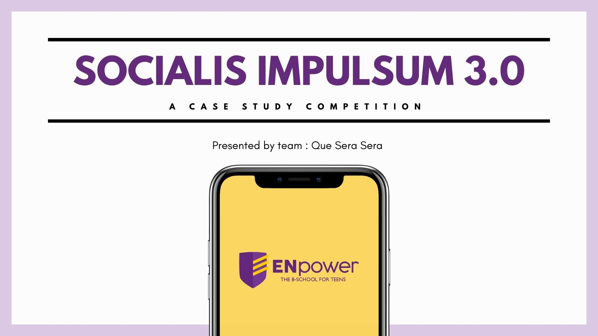
IIT Madras. ENpower — the B-school for teens. What sits between school and “entrepreneur.”
Role: Competition case
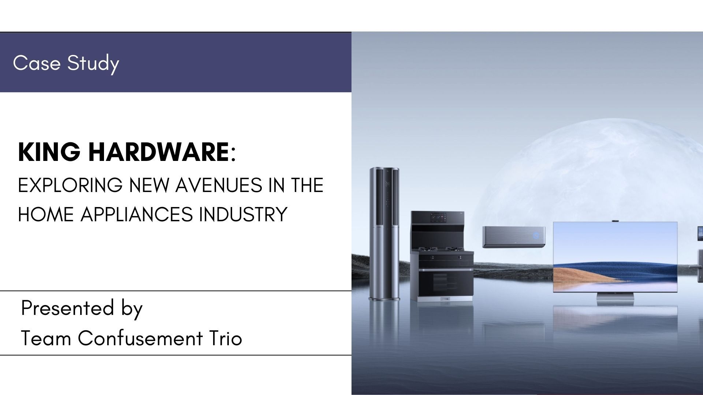
IIT Kanpur. King Hardware: grow a line that already exists, in a fragmented appliances market.
Role: Competition case